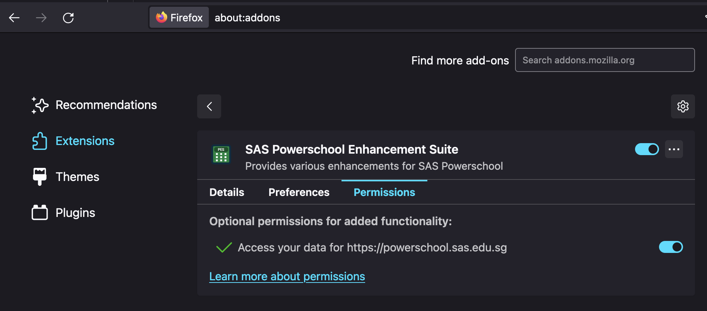

If this page popped up after installing this extension on Firefox, PLEASE READ THIS PAGE!
By default, SASPES will not automatically start without clicking the extension icon popup in the extension toolbar. To make it automatically start up when you open PowerSchool, visit about:addons, and click the Extensions tab on the left. Then, click SAS PowerSchool Enhancement Suite and click the "Permissions" tab. Finally, enable the "Access your data for https://powerschool.sas.edu.sg" option. This will allow the extension to automatically start without you having to click the pop up.
It should look like the image below.
After this, you can navigate to PowerSchool as usual. If you do not want to enable this option, click the extension icon popup in the extension toolbar when you are on PowerSchool to enable it for that page. Each time you navigate to a new screen or reload, you have to do this again.